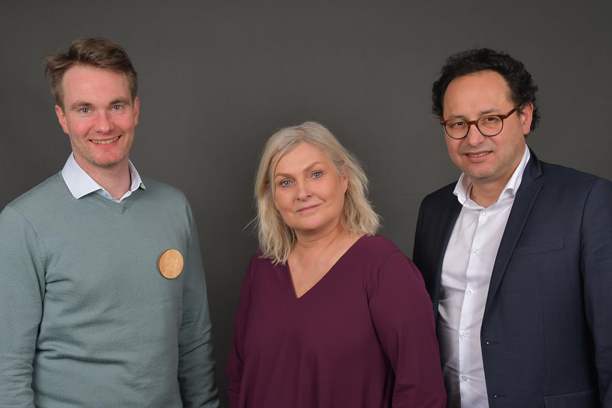

[3 questions] au LF2L, membre de la fédération des espaces d’innovation
Collaboration ENSGSI / ERPI et GRT gaz

Découvrez le Lorraine Fab Living Lab® (LF2L), membre de la fédération des espaces d’innovation dans le cadre du programme Sirius. Un espace, porté par l’ENSGSI et le laboratoire ERPI, qui se positionne comme une plate-forme d’acceptabilité des innovations et d’évaluation prospective des usages.
Factuel a eu l’opportunité d’échanger avec Laure Morel, directrice de l’ENSGSI, Mauricio Camargo, directeur de l’ERPI et Laurent Dupont, responsable scientifique du LF2L pour en savoir plus sur cet espace d’innovation.
Pouvez-vous nous décliner l’identité du LF2L ?

En célébrant son 10e anniversaire cette année, le LF2L confirme sa reconnaissance comme acteur majeur dans l’écosystème innovant du Grand Est. Soutenu dès son ouverture par l’Université de Lorraine, la région, la métropole du Grand Nancy, des groupes industriels, des collectivités, des réseaux de PME-PMI, des associations, le LF2L est un lieu qui permet de mobiliser tous les acteurs à travers un continuum d’innovation 2D-3D-4D au service d’un développement soutenable.
Implanté au coeur de la ville de Nancy, cet espace de co-création, de matérialisation et d’expérimentation par les usages collabore avec de nombreux réseaux nationaux, européens ou internationaux et contribue à diffuser notre savoir-faire local.
- Nom : Lorraine Fab Living Lab ® - LF2L
- Date de création : 2014
- 10 membres (ce chiffre concerne uniquement le personnels dédiés)
- Tutelle(s) : Université de Lorraine - ENSGSI - ERPI
- Site : Nancy
- Type de publics : Citoyens, entreprises, collectivités, chercheurs et étudiants
Quelles sont les activités principales de votre espace d’innovation ?
Au sein du Lorraine Fab Living Lab, diverses activités stimulent l’innovation et la créativité. La création et l’utilisation de « démonstrateurs » de nouveaux produits, procédés, services, et organisations y sont encouragés, mobilisant ainsi entreprises, acteurs des territoires, citoyens et universitaires autour de problématiques communes. Il offre un espace ouvert et fonctionnel de prototypage, à la croisée des concepts d’innovation ouverte, de créativité collective, de Living Lab et de FabLab. Les expérimentations menées reposent sur des approches collaboratives, impliquant les usagers dans la conception et le développement de solutions concrètes pour les territoires du futur.
Avez-vous un projet marquant à partager ?
La création d’une filière de recyclage local du plastique, basée sur la fabrication additive ou l’injection, ouvre des nouvelles opportunités pour l’économie circulaire. Ce projet, le Green FabLab, expérimente au sein du tiers-lieu L’Octroi-Nancy les principes de l’économie circulaire et collaborative, en intégrant les déchets plastiques comme une nouvelle matière première.
Ce démonstrateur illustre la capacité du LF2L à développer des réponses innovantes pour faire face aux enjeux sociétaux et environnementaux d’aujourd’hui et de demain.